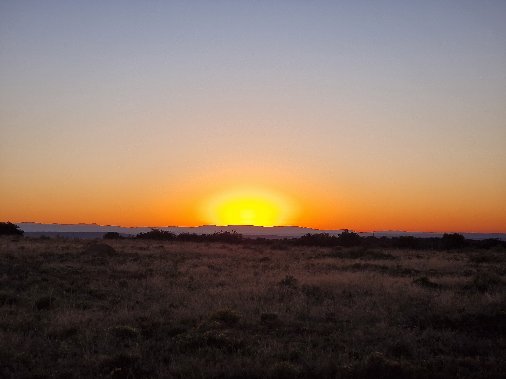

The Eastern Cape
South Africa's hidden gem for the safari of a lifetime.

South Africa's hidden gem for the safari of a lifetime.
The Destination
The Eastern Cape is widely regarded as one of Africa's premier hunting destinations, offering exceptional wildlife, diverse habitats, and unforgettable scenery.
Few places can match the variety found within this region. From mountains and river valleys to open plains and dense bushveld, the Eastern Cape provides a unique hunting experience where every day presents a new challenge.
What Makes It Special
Mountain, valley, and coastal thornveld.
A century-long legacy of wildlife stewardship.
Free-range, ethical hunts on vast concessions.
Over 40 species across a range of habitats.
Comfortable hunting year-round, especially May–Sept.
Beautiful landscapes that capture the essence of South Africa.

Beyond the hunting, the Eastern Cape offers breathtaking beauty and an authentic South African experience that captures the hearts of visitors from around the world.
It is a place where adventure, nature, and tradition come together